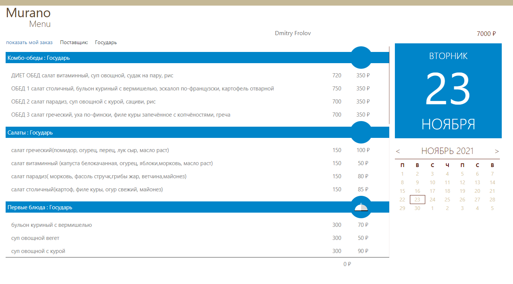
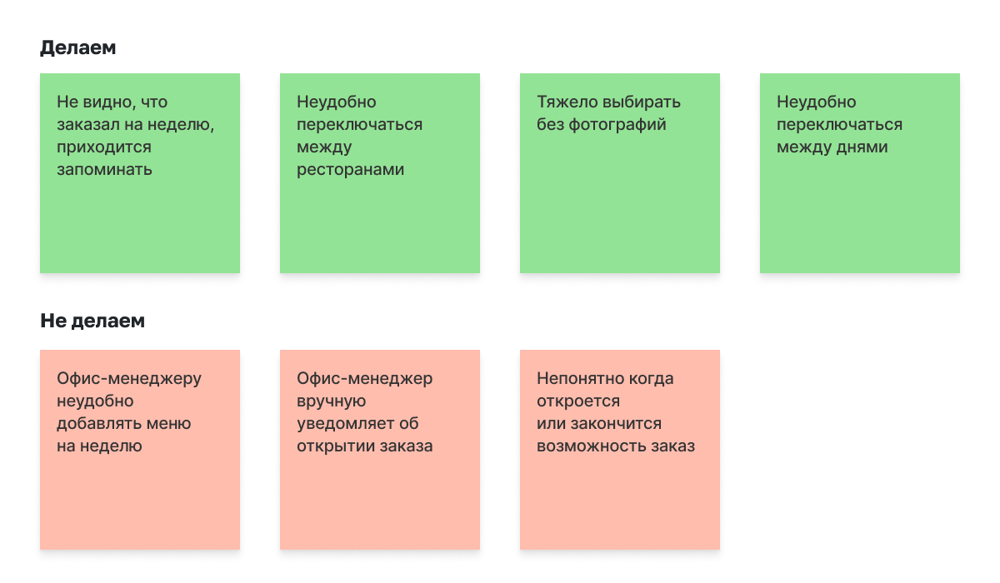
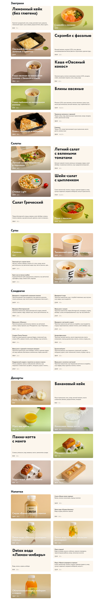
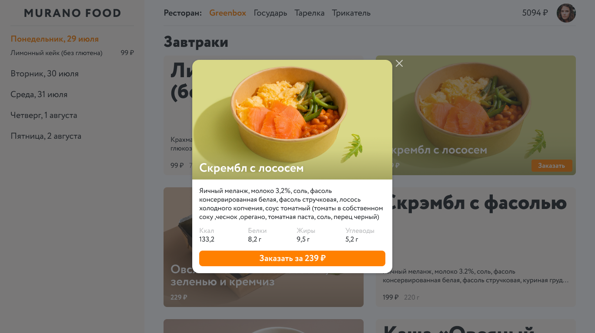

Murano Food
Murano Food это внутренний сервис компании для заказов обедов в офис.
Каждый месяц сотрудникам начисляются деньги, а по понедельникам они
заказывают еду на всю неделю.
Прошлая версия работала плохо, была неудобной и не ассоциировалась с
едой.

Я провел интервью с пользователями, выписал и приоритизировал
проблемы.

В новой версии вместо календаря, слева появился заказ на неделю с
возможностью переключаться между днями. Скролл стал системным.
Рестораны теперь на виду и переключение между ними происходит в один
клик.
Prototype
Чтобы людям было проще выбирать блюда, был придуман алгоритм, который
собирает меню из карточек. Он смотрит есть ли фотография, какие
карточки находятся рядом и принимает решение, как должно выглядеть
меню.

Полный состав и энергитическую ценность можно посмотреть в
диалоге.
